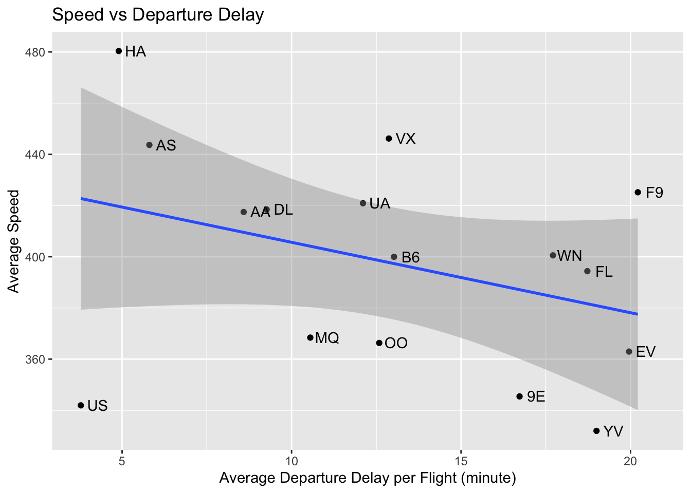

2 In-Class Assignment
2.1 Case 1: Average Departure Delay
2.1.1 Average Departure Delay - Months of the Year
As seen in table below, delays per flight follows a similar pattern among three departure airports in the data:
- Delays seem to peak in the summer season.
- December also stands out as one of the month when delays rise dramatically as compared to previous month for all three departure airports due to christmas effect.
- When considered with number of flights in respective times of the year, although there is no major differences across different months of the year in terms of the number of flights, average delay time per flight changes drastically!.
Important note for the results below is that, cancelled flights are excluded from calculations as delay information does not exist for those flights in the data table.
flights %>%
filter(!is.na(dep_delay)) %>%
group_by(month, origin) %>%
summarize(count = n(), delay = sum(dep_delay)) %>%
mutate(delay_per_flight = delay / count) %>%
select(month, origin, delay_per_flight) %>%
pivot_wider(names_from = origin, values_from = delay_per_flight)# A tibble: 12 × 4
# Groups: month [12]
month EWR JFK LGA
<int> <dbl> <dbl> <dbl>
1 1 14.9 8.62 5.64
2 2 13.1 11.8 6.96
3 3 18.1 10.7 10.2
4 4 17.4 12.2 11.5
5 5 15.4 12.5 10.6
6 6 22.5 20.5 19.3
7 7 22.0 23.8 19.0
8 8 13.5 12.9 11.2
9 9 7.29 6.64 6.21
10 10 8.64 4.59 5.31
11 11 6.72 4.68 4.77
12 12 21.0 14.8 13.6 2.1.2 Departure Delay - Airline Companies
Frontier Airlines, Expressjet Airlines and Mesa Airlines are potential late-flyers.
carrier_delay <- flights %>%
filter(!is.na(dep_delay)) %>%
group_by(carrier) %>%
summarize(count = n(), delay = sum(dep_delay)) %>%
transmute(carrier, delay_per_flight = delay / count) %>%
arrange(desc(delay_per_flight))
carrier_delay# A tibble: 16 × 2
carrier delay_per_flight
<chr> <dbl>
1 F9 20.2
2 EV 20.0
3 YV 19.0
4 FL 18.7
5 WN 17.7
6 9E 16.7
7 B6 13.0
8 VX 12.9
9 OO 12.6
10 UA 12.1
11 MQ 10.6
12 DL 9.26
13 AA 8.59
14 AS 5.80
15 HA 4.90
16 US 3.782.2 Case 2: Average Speed
Average speed in miles is calculated per flight using the distance and time spent in the air.
2.2.1 Speed of Flights - Months of the Year
Average speed of planes peaks during summer time. Weather conditions (less wind, less friction) is a potential factor.
One other factor might be the motivation of pilots to increase their speed and stick to the scheduled arrival time as a result of high delay periods during summer season.
month_speed <- flights %>%
filter(!is.na(air_time)) %>%
transmute(avg_speed = (distance / air_time)*60, month) %>%
group_by(month) %>%
summarize(mean_speed = mean(avg_speed))
print(month_speed)# A tibble: 12 × 2
month mean_speed
<int> <dbl>
1 1 370.
2 2 375.
3 3 390.
4 4 389.
5 5 407.
6 6 404.
7 7 412.
8 8 408.
9 9 414.
10 10 397.
11 11 385.
12 12 377.2.2.2 Speed of Flights - Airline Companies
This table shows the average speed of carriers in their flights.
Hawaiian Airlines, Virgin America and Alaska Airline are on top consecutively.
carrier_speed <- flights %>%
filter(!is.na(air_time)&!is.na(dep_delay)) %>%
transmute(avg_speed = (distance / air_time)*60, month, carrier) %>%
group_by(carrier) %>%
summarize(mean = mean(avg_speed)) %>%
arrange(desc(mean))
carrier_speed# A tibble: 16 × 2
carrier mean
<chr> <dbl>
1 HA 480.
2 VX 446.
3 AS 444.
4 F9 425.
5 UA 421.
6 DL 418.
7 AA 417.
8 WN 401.
9 B6 400.
10 FL 394.
11 MQ 368.
12 OO 366.
13 EV 363.
14 9E 345.
15 US 342.
16 YV 332.2.2.3 Relation Between Speed and Departure Delays
carrier_joint <- full_join(carrier_delay, carrier_speed,by="carrier")
ggplot(carrier_joint, aes(x=delay_per_flight, y = mean)) +
geom_point() + geom_smooth(method = "lm") + labs(x = "Average Departure Delay per Flight (minutes)", y = "Average Speed", title = "Speed vs Departure Delay") + geom_text(aes(label = carrier), nudge_x = 0.5, nudge_y = 0.1, check_overlap = T)